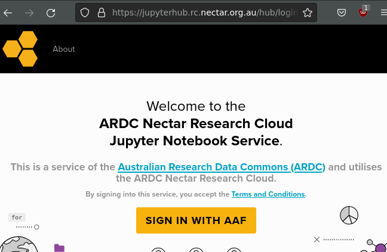
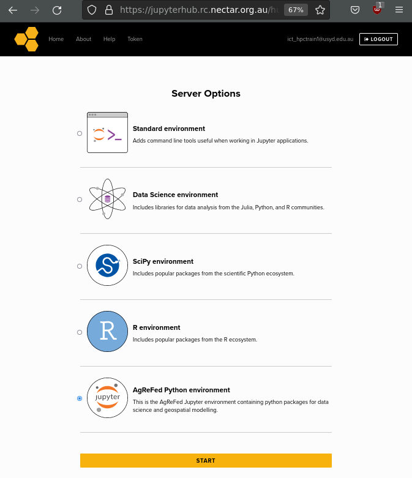
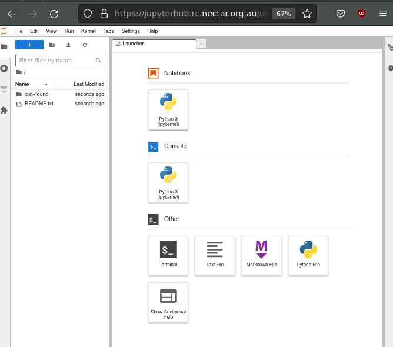

Setting up
Jupyter Hub
We will be using an online “Jupyter Hub” python environment for the workshop. This environment contains all the required libraries and packages pre-configured and allows you to use Python “notebooks” on-demand.
Instructions
Navigate your browser to https://jupyterhub.rc.nectar.org.au/
Click the Sign in with AAF button.

Go through your institutional sign-in process.
If you have no idea what AAF and your institution is not listed, let us know and we can provide an alterante account for the workshop!

Select the AgReFed Python environment server option and then click START. The environment has all the dependant software required to run the Geodata Harvester, to see what is installed, see the Local Install section below.
You should now be in a “Jupyter Lab” interface. Select the Notebook > Python3 (ipykernel) to get started!

Install
in the Jupyter notebook install geodata-harvester via pip (recommended)
!pip install geodata-harvesterYou can then import the library via (note the underscore _ for import of library):
import geodata_harvester as gh
gh.harvest.run()Optional: Local Install
Conda Install
The package geodata-harvester is available via the conda-forge channel:
conda install geodata-harvester -c conda-forgeor in a Jupyter notebook as:
!conda install geodata-harvester -c conda-forge --yesPip Install
Geodata-harvester can be installed via pypi, which requires a pre-installation of gdal (see, e.g., pypi.org/project/GDAL/installation guide) in your environment. Once gdal is installed, you can install geodata-harvester via
pip install geodata-harvesteror in a Jupyter notebook as:
!pip install geodata-harvesterThe geodata-harvester library can then be imported via, e.g.:
import geodata_harvester as gh
gh.harvest.run()Local development environment
If you like to develop Data Harvester locally, it is recommended to setup a virtual environment for the installation, e.g., via conda miniforge. This can be done by downloading the environment file from github.
wget https://raw.githubusercontent.com/Sydney-Informatics-Hub/geodata-harvester/main/environment.yaml
conda env create -f environment.yaml -n gdh
conda activate gdh